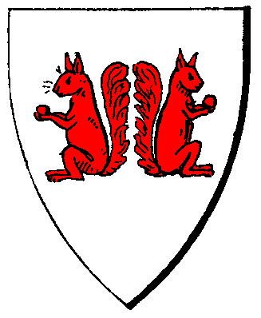

| Übersicht,
Allgemeines |
|
Was machen wir wenn.... (12  ) )
|
San Achanjiati
 |
Jochen ist auch nur ein Mensch. |
02.07.15 7:43
 |
|
Salkin McMulenberc
 |
Wenn ihr jemand braucht der Programme auf Lochkarten lesen kann, helfe ich gerne ;-) |
02.07.15 9:15
|
|
Priboi
 |
Aronius wär toll :-) |
02.07.15 9:34
|
|
Blixa Biernase
 |
Wenn Webtales sich nicht gar zu sehr darum bemüht, SW sterben zu lassen, wird es auch noch lange weiterlaufen. |
02.07.15 9:58
|
|
Thor von Asgard
 |
wenn webtales aussteigt ist das game tot... wer zahlt sonst die Server? ausser es findet sich ein Investor.
Wer erhält den betrieb aufrecht? SW bzw. das softwaregebilde das SW darstellt ist wohl hoch komplex und instabil, wenn irgendwo im Brasilianischen Dschungel ein gecko niest, hauts doch auf den SW Servern die sgripte zusammen. wer soll das alles betreiben? 4playern? lol ne
und vor allem... wenn das spiel so komplex ist, wie immer erzählt wurde, dann muss da eine langwierige und aufwändige übergabe gemacht werden.
Wenn webtales aussteigt, geht das ganze know-how verloren (auch wenn oft genug das know-how der sp |
02.07.15 14:51
|
|
San Achanjiati
|
Abwarten. Möglichkeiten gibt es. Auch für SW. Schwarzmalen ist denke ich jetzt noch fehl am Platze.
Helfende Arme wurden ausgestreckt. Die müssen jetzt ergriffen werden. |
02.07.15 14:58
|
|
| Shâna Carnesîr (RIP) |
also wenn ich den Text richtig verstanden habe, macht die SL (Magwain/Goose aca Angela/Lothar) Scherbenwelten schon weiter..
..Dennoch aber bedeutet dies hoffentlich noch nicht das Ende für Scherbenwelten!..
sie suchen nur eben nen anderen Betreiber.. eben nicht mehr Webtales sondern "wen-auch-immer"..
gibt ja genug andere Plattformen, auf denen man ein Spiel betreiben kann..
..Wir sind bemüht für Scherbenwelten, sowie der aktuellen Spielrunde auch in 2016 und Folgejahre eine Zukunft zu ermitteln. Wir hoffen, für Scherbenwelten und die Spieler eine neue Flagge aufzutun, unter welcher der Spielspaß, die Weiterentwicklung des Spiels sowie eine begeisterte und hoch motivierte Spielleitung/Support weiterhin große Freude bereiten. .
ICH für meinen Teil hoffe und glaube an einen Wipe.. mit neuen Kontinenten und weiteren Möglichkeiten einen Char auszureizen oder eben auch nicht auszureizen..
und ich hoffe, ich bekomme rechtzeitig mit, wanns denn wieder losgeht.. |
02.07.15 15:44
|
|
| Shâna Carnesîr (RIP) |
ich wurde gerade auf einen Denkfehler meinerseits hingewiesen und korrigiere meine Aussage im ersten Abschnitt, darauf, dass die SL doch nicht weitermachen möchte..
nungut.. ich hoffe trotzdem auf ein Weiterbestehen irgendwie.. und drücke die Daumen, dass zumindest mein letzter Abschnitt stimmt.. *gg* |
02.07.15 18:07
|
|
Thor von Asgard
|
ausserdem sind Magwain und Goose Webtales... das steht im Impressum.
Wir werden sehen ob es weiter geht und wenn ja, wie...
evtl. kommt ja nen paytowin vermarkter und baut sw um zu micropayments und erlaubten multiaccounts... keine ahnung |
02.07.15 20:44
|
|
Thor spinnt
 |
DAS wäre dann mit Sicherheit das Ende... |
02.07.15 21:39
|
|
Planet-Mors
 |
@ Drago
Multiaccounts sind - so sehe ich es - der Grund, warum es um SW so schlecht bestellt ist. Ich würde mein Abo kündigen, wenn sich rausstellen würde, dass wieder unehrlich gespielt wird und man trotz seines ehrlichen und regelkonformen Engagements keine Chance gegen die Bescheißer hat.
Bei P2W würde ich ebenfalls aussteigen. Ich habe mit meinem sauer verdienten Geld andere Dinge vor, als zu versuchen mit jemanden auf Augenhöhe zu spielen, der 5 oder 6 Multis betreibt und diese auch noch mit allen möglichen Items ausstattet, die es nur für Geld zu kaufen gibt.
Aber diese Diskussion sollten wir an dieser Stelle erst gar nicht beginnen. |
03.07.15 8:35
|
|
Abdiel der Gehörnte
 |
Ich schließe mich meinem Vorredner und Anrainer voll und ganz an... |
03.07.15 11:39
|
|
Krâtos
 |
Das ganze Spiel mit seinem inhärenten Charme zu erhalten wird am Programmieren kaum scheitern, denke ich...
Grundliegend wurde das Konzept von jemandem der imho keinen Einblick in andere Sourcen als die im Webbrowser verfügbaren hatte bereits vor ein paar Jahren sehr gut nachgebaut und das wenn ich mich richtig erinnere von einer Einzelperson.
Mit der Codebase als Inspiration und nem Zeitraum X zum selber Kreativwerden kann jemand mit ein bisschen Erfahrung im Betrieb eines Webservers und Web- und Backendentwicklung das schon mit sauberem Neucode wieder aufstellen.
Datenbankschema sollte ja bereits straightforward sein oder zumindest bei Neuauflage schnell dahin zu bekommen.
Der Diskussionspunkt "Bezahlsystem" mit dem Unterpunkt "Wirtschaftlichkeit und erwartete Kundenbasis" ist da schon eher das Problem.
Das Abosystem wird imho nicht genug Kunden wieder hinterm Ofen vorlocken, für Advertising und Bezahlen zum Abstellen der Werbung halte ich die Kundenbasis zu schwach und bei einem Pay-to-Win degenerierts mit ziemlicher Sicherheit schnell...
Wie gut vermarktbar Mischkonzepte sind, keine Ahnung.
Aber irgendwie ist die Überlegung müßig, daher harre ich einfach der Dinge die da kommen mögen. |
03.07.15 12:22
|
|
Frathag Graubart
 |
Was uns zu der spannenden Frage führt, was Server denn so kosten für eine Basis von einigen wenigen hundert Leuten, wenn Entwicklung und Betrieb von Ehrenamtlern gemacht werden.
Ich lehne Pay to Win elementar ab, aber ein System in dem man entweder durch Geldeinsatz oder durch langwierige Arbeit das gleiche erreichen kann, damit könnte ich mich je nach Ausgestaltung vielleicht anfreunden. Käme sicher sehr auf die Umstände an. |
04.07.15 1:11
|
|
Zadar
 |
In SW gibt es unzählige Möglichkeiten wo man sinnvoll ansetzen kann wenn man das Spiel in ein Fremium Konzept umbauen möchte ohne das diese gleich overpowered sind.
Neben den bestehenden Funktionen wären auch neue Funktionen denkbar. So zum Beispiel das ich mein Holz direkt beim Produzenten in der Holzhütte abholen kann ohne Zwischenhandel.
Bisher wurde so etwas vermieden um Automatisierung zu vermeiden. Diesen Handel kann man dann aber zum Beispiel mit zusätzlichen GS Kosten belegen um so eine neue Quelle für Geldabfluss zu schaffen. |
04.07.15 1:25
|
|
Planet-Mors
|
@zadar
Geniale Idee. Ich muss mich z.b. nicht mehr bei einem inaktiven Account (oder Multi) einloggen, um an seine Produktion zu kommen. ;-) |
04.07.15 9:10
|
|
Kapo el Ligno
 |
@Planet: jede Verbesserung bzgl. Bedienung oder Comfort kann so ausgelegt werden, dass davon auch Multis profitieren.
@Zadar: ich verstehe absolut dass Dein Vorschlag ur ein Beispiel sein soll, was man verbessern könnte, aber gerade dieser Vorschlag bringt schwerwiegende Balancing-Probleme, da es den produktionslimitierenden Faktor "Lager" stark entwertet. |
04.07.15 10:04
|
|
Lyra Callionymus
 |
Ein Spiel, so wie jetzt, nur die Karte vielleicht etwas kleiner, für umsonst.
Dann gibt es aber noch entferntere Inseln, die mit den normalen Schiffen nicht erreichbar sind. Bessere Schiffe gibt es für richtiges Geld zu kaufen. Auf den entfernteren Inseln sind dann z.B. Kakaofelder oder Schneefelder und Kräuter etc., diese gibt es in der normalen Welt zwar auch aber dort bleiben diese Ressourcen hart umkämpft, weil selten.
Auch wären andere Bereiche denkbar, die nur für echtes Geld zu betreten sind. So wäre ein Spiel möglicherweise finanzierbar, ohne dass sich das eigentliche Spiel, welches umsonst ist, wesentlich verändert.
Die Programmierer könnten immer neue Bereiche erfinden, die sich für Geld freischalten lassen in Form von besseren Schiffen oder Hexenbesen oder Flugsauriern, die sie für Echtgeld verkaufen und die den Käufern dann aber ein Leben lang zur Verfügung stehen.
|
04.07.15 10:08
|
|
Zadar
|
Kapo, man muss den Leuten ja auch einen echten Mehrwert biete. Direktverkauf ist da schon sehr stark, unterscheidet sich aber kaum von einer Leerung durch Plünderung in internen Gebieten.
Es gibt hinsichtlich Komfort aber sicher grössere Baustellen.
Planet, ich habe ja nicht geschrieben das der Hüttenbesitzer ewig lang inaktiv sein darf. Zumal eine Prod ja auch regulär Luxus verbraucht.
Diese Funktion würde es Produzenten aber natürlich erlauben sich länger von ihrer Prod zu entfernen. Najo alles nur ein mögliches Beispiel. |
04.07.15 11:02
|
|
| Shâna Carnesîr (RIP) |
also wenn man sich für reales Geld mehr Vorteile erkaufen kann, als diejenigen, die eben nicht soviel Kohle im Monat haben, wie andere.. werden ich definitiv NICHT mehr dabei sein.. |
04.07.15 11:04
|
|
Zadar
|
Shana, meist sind solche Konzepte darauf ausgelegt sich eben doch ein Abo zu holen. Das heisst Abo Spieler bekommen den wichtigen Kram uebers Abo.
Free Spieler müssen dann halt auf ein paar Funktionen verzichten. |
04.07.15 11:10
|
|
VitaminC
 |
So mal erlich wenn du wieder von Multies Anfängst...überleg erstmal!
Das leeren von Massenwaren hat kaum was mit Multies zu tun. Denn die Vorteile eines Multies liegen bestimmt nicht dadrine sich Massenware herzustellen und leicht rauszunehmen! Das kannst in saven Gebieten auch über eine Plünderleerung oder Sitten!!! Und wenn dir das einer erzählt hat dann sag ihm er hat ein Rad ab ;)
Die größten Multie vorteile sind:
-Ausbauten(Stadt)
-Aufwerten(Felder)
-zusatz einkommen Karawanenertrag
-PVP (Hilfe, vorlaufen oder ablaufen usw..)
-zusatz Türme (Kriegsaktion)
-zusatz Burg (dauerhaft Pupen etc.)
-zusatz Lager (200-400 extra)
-gegenstands Produktion (EDs, Uni waffen etc.)
Schaffst du die meisten Vorteile ab wird niemand noch Multies haben! Vorallem nicht wenn du dafür bezahlen Musst, es dir aber legal Kaufen/Erwirtschaften kannst!
P.s. Die meisten Multies 95% die gesperrt wurden waren Petro oder ED prodder und halbwegs Starke PVPler (thema Ablaufen, vorlaufen!) |
04.07.15 11:15
|
|
San Achanjiati
|
Mag jetzt sicherlich unpoulär sein. Doch vielleicht ist es sogar erforderlich bestimmte Spielertypen raus zu kegeln wenn mit einem anderem Konzept mehr Spieler angesprochen werden können.
Wir sollten nicht den Fehler begehen Bestandsschutz für die aktuelle Situation anzunehmen nur weil, wenn wir Glück haben, jemand anderes die Plattform weiter betreibt. Das wäre schön doch sollte einer Zukunft des Gesamten nicht im Wege stehen.
Um was geht es denn. Scherbenwelten weiterhin beizubehalten oder den eigenen Status Quo möglichst lange zu halten? |
04.07.15 11:16
|
|
Frathag Graubart
|
Im Übrigen denke ich, dass die Kamele abgeschafft gehören, wenn man SW überarbeitet und neu aufmacht. Sie sind von Grund auf Übel, entsorgen überflüssige Produktion und besorgen andere Waren. Sie sind ein Zeichen der nicht balancierten Wirtschaft. |
04.07.15 13:48
|
|
Frathag Graubart
|
Denken wir mal über die Scherbe 3.0 nach und wie man Multis unattraktiv machen kann. Mein erster Gedanke ist Stadtausbauten, Felder einnehmen und aufwerten um den Faktor 10 zu verbilligen.
Nachteil: Städte und Produktion sind bei Bedarf extrem schnell auf hohem Level. Und? Wo ist das Problem? An der Versorgung ändert sich nichts.
Vorteil: Der Anreiz zu zusätzlichen Investitionen (noch dazu entgegen der Regeln) ist zehnfach niedriger.
Türme: Würde ich ersatzlos streichen. Dafür nehme ich an, dass am Kampfsystem gefeilt werden müsste, weil sonst Plünderungen und Abrisse der teuren Großgebäude zu einfach sind. Das ist jetzt ein Bereich, der mich seit der Beta nicht mehr interessiert hat, da müssen andere Details ausarbeiten. Ggf. Teilnahme aller Burgverteidiger am Kampf, oder stärkere Burgverteidigung durch Fernkampfoptionen?
Ggf. eine Art Mauerbau analog zum Straßenbau. Eine Mauer kann von Spielern überquert werden, aber nicht von Armeen. Dazu muss regelmäßig Unterhalt geleistet werden, damit das Bauwerk nicht kaputt geht. |
04.07.15 14:03
|
|
Zadar
|
Das Kampfsystem müsste ohne Türme radikal neu konzepiert werden. Mir erschließt sich auch nicht so ganz der Sinn warum man Türme entfernen sollte um dafür ein anderes Sperrgebäude einzurichten.
Genausogut könnten Türme auch einfach ohne Char arbeiten.
Die Bücherproduktion sollte sich durch teure und wenig effiziente Ausbauten steigern lassen. Die maximale Stadtgröße ist durch das Siechenhaus ohnehin gedeckelt. |
04.07.15 14:22
|
|
Zorra
 |
Ich habe immer shcond afür plädiert, große Städte inattraktiv zu machen.
Wie beim Charakter anwerben in 10er Potenzen:
1 EW 1 PP
10 EW 2 PP
100 EW 3 PP
1000 EW 4 PP
10000 EW 5 PP
ab einer bestimmten Größe nimmt dann einfach die PP Ralligkeit ab, weil es in keinerlei Verhältnis mehr steht.
Keine großen Städte, die versorgt werden müssen = weniger Multis
|
05.07.15 19:14
|
|
Baldur McMulenberc
|
Jop, und damit nimmt man der Scherbe gleich noch die komplette wirtschaftliche Basis weg, nach 2 Monaten wären sämtliche Prodgebs endausgebaut, und nach 6 Monaten würden sich Wirtschaftler aus Langeweile löschen.
Der Ausbau von Städten gehört bei einem Bezahlspiel DRINGEND überarbeitet, die Abschaffung großer Städte über das ohnehin bereits umgesetzte Maß hinaus wäre aber der SuperGau für das komplette Wirtschaftssystem. |
05.07.15 19:32
|
|
Radalitz Trollblut
 |
Andersherum wird ein Schuh draus. Kleine Städte sind leicht zu verwalten. Grössere Städte erfordern mehr Personen, um die Ordnung zu erhalten.
bis 50k EW - ein Stadthalter
50l-100k EW - 2 Stadthalter (BM+Sheriff oder sonst etwas)
100k-200k EW - 3 Stadthalter (BM+X+Y)
...etc.
Eingetragene Personen dürfen niemals die gleiche IP haben in diesem Fall. |
05.07.15 20:51
|
|
Radalitz Trollblut
|
Bei einem Inaktiver Account brechen Unruhen in der Stadt aus, bis ein neuer ernannt wird (keine PP, etc.)
Vertretung sollte erlaubt sein, allerdings ohne Boni (keine PP etc.), allerdings keine Unruhen. |
05.07.15 20:56
|
|
Zorra
|
Der Massenausbau bei Städten fördert nur das Multitum und sonst gar nichts. Und wenn die PP nicht mehr so aiuseinaderklaffen würden, würde das gegenseitige Behaken vielleicht auch wieder mehr Spass machen.
Damals hatte ich auch ohne Bücher und ohne Glas, die Sachen, die nur eingeführt wurden, um große Städte schwerer erhaltbar zu machen, Spaß.
Das einzige, wozu diese Erschwernisse für größere Städte führten, waren immer mehr Multis, und andere mussten dann auch welche haben, um ein Gegengewicht zu den MassenPP zu generieren. Das Ungleichgewicht wurde einfach nur immer größer, und die Kleinen wurden einfach weggeputzt wenn sie nervten - eben weil es dieses extreme Ungleichgewicht gab.
Dazu kamen natürlich die extremen Gewinne aus Karas, die sein musste, weil man ja die fetten Städte erhalten muss. Aber was blubber ich hier, wird eh nicht mal mit meiner Idee getestet werden, insofern alles Latte |
05.07.15 21:16
|
|
Zadar
|
Karawanen wurden ja bereits vor 10 Jahren sehr stark generft und sind kein Vergleich mehr zu dem Zustand vorher.
Zorra hat aber insofern recht dass der klassische Multi erst mit der Final entstanden ist.
Mir persönlich wäre eine Lösung am liebsten die die einige der wichtigsten Funktionen von Multis für alle frei verfügbar macht.
Die Multijagd mag erfolgreich gewesen sein aber mir wäre es lieber sie einfach überflüssig zu machen. |
05.07.15 21:53
|
|
Radalitz Trollblut
|
Multis kann man mit Sicherheit ebenfalls überflüssig machen.
Viele andere Spiele nutzen einen Counter, um Gebäude zu bauen. Könnte man hier vielleicht ebenfalls mit einbauen.
Vielleicht wäre es ja möglich die ausbauten ausschließlich durch den/die Stadtbetreiber zu tätigen mithilfe der PP, z.b.
0-10te. Ausbau = 0 pp je ausbau+ Counter + (höherer Stadtverbrauch)
11-20te. Ausbau = 1PP je Ausbau + siehe oben.
Etc.
Nur eine Idee... |
05.07.15 22:12
|
|
Kapo el Ligno
|
@Radalitz: Dir ist schon bewusst, dass bereits eine 100k-Stadt 490 Tavernenausbauten und 90 Arenaausbauten braucht (etwas weniger, da man ja durhc mehrere Tavernen und Arenas die Ausbautenanzahl leicht reduzieren kann), Lager und Lux gar nicht mitgerechnet?
Damit bräuchte man schon extrem viele PP um überhaupt an PP zu kommen - und man hätte keine Möglichkeit mehr, Fremdausbauer anzuwerben, damit sie für GS ausbauen.
Ergebnis wäre: viel viel viel kleinere Städte, viel viel viel geringerer Warenverbrauch. Damit auch viel schneller das Ende der Fahnenstange für Wirtschaftsspieler erreicht (die laut SL und auch nach meinem persönlichen Eindruck einen Großteil der SW-Community stellen).
Und für den Fall dass Du die SW-Entwicklung der letzten ca. 5 Jahre verschlafen hast: es gibt bereits eine Progression, sowohl bei der Gebäudeanzahl (->Lehenskosten) als auch bei dem Ausbau selbst (->Werkzeug). |
06.07.15 11:06
|
|
Radalitz Trollblut
|
@Kapo: Ideen kann man auch als Denkanstoss nutzen. Nirgends ist in Stein gemeisselt, dass es nur so und nicht anders umgesetzt werden darf.
Im Grunde ging es hier gerade darum Multis überflüssig zu machen. Eine Möglichkeit hierbei ist es die Ausbauten rein durch durch den BM zu leisten.
Es gibt sicherlich noch andere Spieler, die andere Ideen hierbei äussern könnten, nur wird ohnehin nichts in der Richtung mehr umgesetzt oder sieht hier jemand eine Chance in der nächsten Zeit?
Zumal es ein extremes Eingreifen in den jetzigen Spielmechanismus wäre, welcher ohnehin total abgelehnt wird.
Selbst für eine neue Runde würde sowas mit Sicherheit nicht berücksichtigt werden, da bis dahin sehr viel Zeit vergehen würde.
Auf Fremdausbau zu pochen halte ich allerdings für keine Lösung, wenn es um die Beseitigung von Multis geht, nur so nebenbei. |
06.07.15 13:35
|
|
Kapo el Ligno
|
In "guter alter Zeit", als potenzielle Siedler einen noch nicht gefragt haben, wieviele GAs ihnen kostenlos gestellt werden, konnte man sich als Anfänger damit sehr gut einen Start finanzieren. |
06.07.15 15:01
|
|
Parion Theredith
 |
In "guten alten Zeiten" bestanden ganze Nationen aus Multis. Echt ein spitzen Argument von dir. |
06.07.15 15:46
|
|
Kapo el Ligno
|
Sehe den Zusammenhang nicht. |
06.07.15 15:55
|
|
Theogrimm
 |
Multis sind ein gewaltiges Problem, jedoch kann man nicht verlangen das eine Stadt von einem Spieler hochzezogen wird, um "den multi" unattraktiv zu machen.
Den Drang zum Betrug unterdrücken, indem man das Spiel komplizierter bzw. in meinen Augen schlechter macht, ist der falsche Weg.
Und ja, der wirtschaftliche Aspekt ist einer, wenn nicht sogar, der Reizvollste in diesem Spiel.
|
06.07.15 17:25
|
|
Radalitz Trollblut
|
Um eine Sache nur mal vorweg zu nehmen. Ich halte eigentlich nichts vom verändern des kompletten Mechanismus.
Ich für meinen Teil bin vollkommen zufrieden mit allen Funktionen, jedoch geht es nicht um mein eigenes Empfinden, weshalb ich diesen oder jenen Vorschlag unterbreite.
Ich fände es vielmehr Schade, wenn Änderungen durchgeführt werden. Jedoch wenn Sie notwendig sind, würde ich mich dem fügen, damit das Spiel laufen kann.
Besser wäre natürlich, wenn über Externe(Spielleitung/Support/System) geprüft werden könnte, ob es sich hierbei um einen Multi handelt. Problem ist hierbei nur, das Menschen nicht viel Vertrauen für ein unbekanntes Kontrollgremium haben und vielleicht daher mit Multis rechnen.
Eine andere Variante wäre natürlich, wenn Multis bis zu einem gewissen Grad erlaubt wären, damit diese Diskussion überhaupt nicht stattfinden muss. Wäre aber ein KO-Kriterium für das Spiel.
Man muss hier viel Vertrauen den Organisatoren des Spiels entgegen bringen, damit es in einem vernünftigen Klima überhaupt laufen kann. |
06.07.15 17:55
|
|
Gerno Flinklöffel
 |
@Parion Theredith
Nein, in den guten alten Zeiten von denen Kapo da spricht bestanden eben nicht ganze Nationen aus Multis. In der Zeit hatte ich (in Gestalt meines früheren Chars) weder Zeit noch Bedarf an Multis.
Das Problem waren weder Ausbauten noch Türme oder so. Das Problem trat dann auf, als die Spieler irgendwann inaktiv wurden und man dann keinen Nachwuchs mehr hatte.
Von daher geht die Diskussion hier erstmal am Problem vorbei. |
07.07.15 19:56
|
|
Kantar
 |
Er muss es ja wissen .. |
08.07.15 18:21
|
|
Kapo el Ligno
|
Wer? |
08.07.15 18:48
|
|
Fabius Alagos
 |
Ich würde gerne mal wissen ob jemand sich schon ernsthaft Gedanken gemacht hat und sich mit Webtales in Verbindung gesetzt hat. Wäre ja blöd wenn hier mehrere Gruppen ihr Süppchen aneinander vorbeiköcheln.
Falls nicht, macht es Sinn, dass sich Gleichgesinnte und Könner irgendwo absprechen? Hier oder anderswo? |
08.07.15 19:19
|
|
San Achanjiati
|
Ja. Kontakt wurde versucht aufzubauen.
Gemäß Support sind Anfragen und Angebote an "info@webtales.de" zu richten.
Bisher keine Antwort. |
08.07.15 19:22
|
|
Kapo el Ligno
|
@Fabius: Das Problem ist, dass durch die bestehende Polarisierung es schwierig sein wird, einen neuen Betreiber aus dem Spielerkreis zu finden, der halbwegs angenommen wird. Kommt er aus den Frostreihen, wird auf ewig der Vorwurf in der Luft hängen, "Hain"-Spieler würden unfair behandelt bzgl. Verstöße etc. Kommt er aus dem Ex-Hain, passiert dasselbe, nur umgekehrt.
Vor ein paar Monaten hätte ich mich darum bemüht, aber in jetziger Situation würde auch mir dann Parteilichkeit vorgeworfen werden.
Und kann sich irgendwer eine OOC-Zusammenarbeit von Frost und Hain vorstellen? Ich meine, auf beiden Seiten gibt es Vernünftige und Unbelehrbare, aber... |
08.07.15 21:24
|
|
Fabius Alagos
|
1. Erstmal wärs schön zu wissen, unter welchen Bedingungen Webtales das Spiel aus Händen gibt. Gibts da nen Preis oder sonstige Bedingungen?
2. Wenn wir das wissen können wir doch mal gucken wer aus dem Spieler- oder Nichtspielerkreis da Interesse hat.
3. Dann muss man sich ein Konzept überlegen was aus SW werden soll und wie das umsetzbar ist. Ist Entwicklung gewünscht oder wird nur der Status quo aufrecht erhalten.
4. Dann stellt sich natürlich auch die Frage nach dem Support. Was macht der bisherige? Ich bin absolut der Meinung, dass wir das als Spielerschaft hinkriegen. Ich glaube aber, dass es kontraproduktiv ist, den Vorgang nicht transparent zu halten.
|
08.07.15 21:57
|
|
Olivia v. glänzenen Wolfstern
 |
Sagt mal liebe SL oder Support, entzieht ihr hier Leuten die Schreibeberechtigung?
Wenn ja, dann nennt bitte mal Grunde warum und wieso!
oder hakt es gar wieder?? |
08.07.15 22:29
|
|
Krâtos
|
Ich habe ebenfalls vor geraumer Zeit eine Anfrage geschickt bezüglich Erwerb der Sourcen mit Bitte um ein Angebot oder Vorstellungen was geschehen soll.
Ohne Antwort.
Daher mutmaße ich, dass entweder bereits Verhandlungen von Webtales mit einer unbekannten (ggf auch juristischen) Person proaktiv aufgenommen wurden und/oder keine Veräußerung an Spieler erwünscht ist.
Persönlich sehe ich einige Spieler auf beiden Seiten der Konfliktparteien, die ich als objektiv genug für so ein Projekt empfände. Andererseits auch einige, die ich für nicht geeignet halte, mit Verantwortung betraut zu werden...
Andersrum fragt sich aber auch, wer sich das tatsächlich ans Bein binden wollte, ohne selber richtig mitspielen zu können.
Weiterentwicklung und sicher auch Restauration wird wohl unumgänglich für Fortbestand. |
09.07.15 13:08
|
|
Olivia v. glänzenen Wolfstern
|
an meine Anfrage kann der Stinkefisch,
ich bekam umgehend eine Antwort,
danke "Gaia" für die Reaktion und Erklärung |
09.07.15 14:44
|
|
Hippie Hasenfutter
 |
Na dann sag ich halt doch mal was dazu. Weiß nicht, ob es schlau ist, aber was soll´s!
Ich hatte im letzten Jahr im Grunde nur aus einem Grund wieder hier reingeschaut und mir nen Account zugelegt, um die Lage zu checken und Scherbenwelten zu kaufen, bevor es sang- und klanglos stirbt.
Auch aus Nostalgie, ja, denn es hatte mich von 2002-2004 extrem gefesselt, aber auch, weil ich immer noch Potenzial darin sah.
Ich kontaktiere also Webtales im letzten Jahr, es kam nach einigen Anlaufschwierigkeiten auch ein Kontakt und eine Reihe von Gesprächen zustande, und ich habe ein Kaufangebot unterbreitet, welches auf Interesse stieß. Zur endgültigen Klärung der Einzelheiten kam es nicht, aber es herrschte zumindest Konsens, dass eine Ankündigung des Ausstiegs von Webtales idealerweise mit gleichzeitiger Information zur Zukunftsgestaltung seitens des neuen Betreibers stattfinden sollte.
Ich wurde von dem Post dann leider überrascht, und meine Versuche zur telefonischen Kontaktaufnahme sind seither fehlgeschlagen.
Somit gehe ich davon aus, dass ich raus bin.
Sehr schade eigentlich, denn ich habe in den vergangenen Monaten viel Arbeit in die Aufarbeitung von Wünschen und Vorschlägen der Community sowie die Umsetzung in Konzepte verbracht.
Als Betreiber wäre ich selbstverständlich als Spieler raus gewesen, und zwar gern, da wir die Erstellung von Content sowieso mehr Freude macht.
Meinetwegen können wir gern eine offene Diskussion starten, wer bereit ist, sich auf welche Art einzubringen, aber ich bin auch gern zu Plaudereien am Telefon bereit. |
10.07.15 22:31
|
|
Ferret
 |
Der Chefprogrammierer von Iron Shark ist ein Freund von mir. Der hatte mir am Telefon gesagt das er gern mal ein Spiel programmieren würde. Es sollte zwar ein kleines sein, aber wenn Interesse besteht, dann könnte ich mit ihm reden ob er einsteigt ( als Privatperson)
Ich hoffe das Hippie den Kontakt wieder herstellen kann. |
11.07.15 8:40
|
|
Ateara Tinuhin
 |
Gibt es schon etwas Neues? |
19.07.15 22:51
|
|
San Achanjiati
|
Hey, es sind erst zwei Wochen vergangen ;) |
19.07.15 23:38
|
|
Ateara Tinuhin
|
19 Tage seit der Mitteilung... |
20.07.15 20:55
|
|
Samuel
 |
mir würden einige Topics einfallen die viel länger ausgesessen wurden.....
Bespassung z.B. |
20.07.15 21:51
|
|
| Rolliges Blackie (RIP) |
Minimieren hab Euch gesagt das wird nicht ewig anhalten :) |
21.07.15 5:43
|
|
Kantar
|
Na es wurde geschrieben das in den nächsten Tagen von ihnen etwas kommt
Ihre Nachricht ist vom : Support am 01.07.15 2:17
"Mit dieser Nachricht wollen wir Euch zunächst über die wesentlichen Konsequenzen informieren und gehen in den nächsten Tagen gern ausführlicher auf unsere Beweggründe und Fragen ein." |
22.07.15 6:33
|
|
San Achanjiati
|
Es wurde jedoch auch von"in der Hoffnung" und "sobald" gesprochen.
Und mal ehrlich, hat wirklich jemand geglaubt das "in den letzten Tagen" Webtales sich hier anders verhält?
Das ist nicht bös Webtales gegenüber gemeint, eher eine Einschätzung der letzten Jahre.
@Rolli: Mehr Nudelkuchen! Die halten ewig. |
22.07.15 7:22
|
|
| Norbert von Herringen (RIP) |
So... Was ich mir Wünschen würde:
Webtales stellt die Bedingungen für eine Übernahme des Programmcodes zur Verfügung, dazu eine kleine Übersicht auf was für Servern SW läuft.
Wenn wir Summe X (für den Code) und die Kosten für einen oder zwei Rootservern kennen, dann wissen wir, was es braucht, um das Spiel aufrecht zu erhalten.
Wie Summe X und monatliche Serverkosten dann gedeckt werden muss man sich dann mit Auseinandersetzen. Ein Weggang von 4P sollte der erste Schritt sein und eine andere Zahlungsmethode eingeführt werden, wenn diese in dem Maße überhaupt benötigt wird.
Ich denke nämlich dass 2 dickere Rootserver (Kosten ca. 150/Monat jeweils) für den Betrieb von SW ausreichen würden.
Dann könnte man das Abo-System zum Selbstkostenpreis vergünstigen und somit wieder Spieler ins Spiel bringen.
Für mich ist wichtig bei so einer Übernahme:
Es muss schnell gehen, denn sonst wird am 1.1. das Licht ausgehen. Schließlich müssten die Zahlungsanbieter ja gewechselt werden und das Spiel müsste umziehen. Ebenso wichtig wäre der Weggang von 4Players. Oft genug haben Spieler aufgrund Probleme mit 4P aufgehört. Was/Wie sich das Spiel danach weiterentwickelt, das steht dann noch in den Sternen.
Ein Programmierer mit PHP-Erfahrung meldet sich hiermit schonmal, bei einer evtl. Übernahme mit anzupacken. |
25.07.15 8:14
|
|
| Rolliges Blackie (RIP) |
HM Nudelkuchen lecker lecker. :) |
25.07.15 15:37
|
|
Braeniver Undomiel
 |
also, selbst wenn es jemand kaufen sollte, SW ist ja kaum noch was wert, denn der einzige Wert sind die Nutzer und die sind ja mittlerweile unter 500 gefallen. Dafür gibt keiner mehr was. Der Code müsste gewaltig angepasst werden und eigentlich alles auf 0 gesetzt werden. Selbst bei einem free to play Modell kann man kaum noch was draus machen...Vor ein bis zwei Jahren habe ich mal in einer Diskussion angestoßen, dass Spiel zu kaufen (damals noch mit mehr als 1.000 Spielern), aber keine Antwort kam...Man hätte es +/- 0 laufen lassen können und hier und da langsam weiterbringen können...also ich will Euch da echt nicht die Hoffnung nehmen, aber ich sehe keine große kaufmännische Chance für eine Zukunft für SW, weil einfach VIEL ZU SPÄT reagiert wurde um vielleicht noch das maximale Gewinnmodell zu erwirtschaften, was nun wahrscheinlich nicht mehr klappt, weil Kosten nicht mehr Einnahmen decken... my2Cent |
26.07.15 17:21
|
|
| Norbert von Herringen (RIP) |
Nun, ich denke hier werden die Pforten geschlossen. Denn Webtales hat trotz der Tatsache, dass sie die Pforten schließen und den Spielbetrieb einstellen wollen (und dann komplett leer aus gehen), ein attraktives Übernahmeangebot ausgeschlagen, da es keine "Ablöse" enthielt.
Seien wir realistisch:
Wenn jemand Summe x für das Spiel bezahlt ist die Wahrscheinlichkeit hoch, dass diese Person sein Geld "verliert", also keinen wirtschaftlichen Nutzen hat.
Meine Idee war folgende:
Der SW-Programmcode kann optimiert werden (hier und da Berechnungen vereinfacht etc).
Für den Betrieb von SW sollten meier Meinung nach 2 Server (je Intel Xeon E5-1650 mit 6x3,2 GHz, und 32 GB RAM) oder ein Server (Xeon 1650v3 mit 6x3,5 GHz und 128 GB RAM und SSDs) ausreichen.
Jede Konfiguration würde rund 300 Euro im Monat kosten. Bei einem vernünftigen Zahlungsanbieter müssten 300 Abonnenten je 1,20 im Monat zahlen, dass das Spiel auf Selbstkosten läuft.
Bei 500 Abonenten mit je 2 könnte man sogar noch stärkere Hardware einsetzen.
Das ganze setzt Codeoptimierung voraus und durch den verringerten Preis + anderer Zahlungsanbieter hätten neue Spieler gewonnen werden können und evtl. wieder Gewinn erwirtschaftet werden.
Aber eine Übernahme durch Gewinnbeteiligung wird leider ausgeschlossen. |
29.07.15 7:46
|
|
Altan Stormwind
 |
das ist aber schon eine ganz schöne Milchmädchenrechnung, mit wirtschaftlicher Basis hat das nichts zu tun...
denke es wird bessere Angebote geben...
ich sehe das Thema mit der Gewinnbeteiligung auch nicht wirklich so kritisch, warum nicht, muss nur vertraglich sauber geregelt sein... |
29.07.15 9:14
|
|
| Josef Wurzelmeier (RIP) |
Etwas makaber aber vielleicht haben ja verrückte Wissenschaftler in ihren Magiertürmen eine grausige Entdeckung gemacht!
Durch die Spaltung von Endurium entstanden mächtige Waffen.
Vielleicht konnten sich einige Scherbenbewohner in tiefe Tunnel unter der Erde Retten.
Da könnte dann die nächste Runde starten.
Ach halt das gabs schon irgendwo :-/
hm, ja hört sich alles nicht so toll an.
Hab nach vielen Jahren mal wieder reingeschaut macht mir immernoch Spass !
Bin gespannt!
|
29.07.15 10:00
|
|
Altan Stormwind
|
wie man eine weitere Welt RP technisch einbindet, ist aktuell "Schnickschnack", erst einmal muss es technisch weiter gehen... |
29.07.15 11:22
|
|
| Josef Wurzelmeier (RIP) |
Ja, ja, der Herr von der Technik.
Irgendwo da oben hat ein Wirtschaftler geschrieben.
Aber beraubt mich ja nicht um meinen Weltuntergang xD |
29.07.15 11:35
|
|
Frathag Graubart
|
Was war denn ein "attraktives Übernahmeangebot"? |
29.07.15 11:42
|
|
chrissi
 |
also so wie sich der Beitrag von Norbert liest war ein attraktives Übernahmeangebot der weitere Betrieb des Spiels durch ihn, sofern Webtales keinen Cent Ablöse haben wollen würde
dass das angebot gescheitert ist verwundert mich nicht... |
29.07.15 11:46
|
|
Braeniver Undomiel
|
Was ist denn mit dem Urbetreiber? Gehört dem nicht noch die Domain? Könnte er nicht was ausrichten oder hat er mit der Sache auch komplett abgeschlossen? |
30.07.15 20:55
|
|
Ky Sar
 |
Wäre gut wenn jemand das Ganze übernehmen und verbessern würde. Vorallem wenn dann auch Vorschläge eingebunden werden etc. Das SW kostenpflichtig ist, ist kein Hindernis für mich, ich zahle auch gerne weiterhin die 45 Euro im Jahr..
Von Servergedöne, Wirtschaft etc habe ich leider wenig Ahnung aber wenn was an Grafiken gebraucht wird bastel ich gern wieder mit :D |
01.08.15 14:02
|
|
Kapo el Ligno
|
Es ist ja witzig, dass jemand tatsächlich in demselben Post schreibt, dass er vom "Servergedöne" keine Ahnung habe, aber ansonsten genau wisse wie es weitergehen soll...
In einem muss ich Altan recht geben: zum Serverbetrieb gehört weit mehr als nur der technische Preis für Server. Die Server betreiben sich bekanntlich nicht von allein - unter anderem müssen sie regelmäßig gepatcht werden, es passieren ab und zu technische Probleme etc.
Dazu kommen noch die Kosten für Codepflege etc. Stellt Euch mal vor, die ITler müssen auch von irgendwas leben.
Ansonsten könnte man ja auch die Beteiebskosten für ein Auto rein nach KfZ-Steuer berechnen .. |
01.08.15 17:09
|
|
Fabius Alagos
|
Was machen wir wenn...
Das ist hier die Frage. Ich weiss, dass hier genug Freaks rumsitzen, die das Know-How haben und auch die Kosten sind nicht das Problem. Das Problem ist, dass wir nicht als Gemeinschaft/Einheit/Schwarm kommunizieren können und wollen, um aus dem Gesamtwissen/-können die Antwort auf die obige Frage herauszufiltern.
Sie ist aber da...die Antwort.
Kann nicht mal jemand sowas programmieren? Eine Software mit der man Informationen bzw. Antworten auf Fragen gewinnt...irgendwie müsste das Pyramidenartig verlaufen und oben steht die Antwort. In den unteren Etagen eine Vernetzung von Waben.
Wir testen das hier und wenns funktioniert, stellen wir es weltweit online...ich hab da schon ein paar Fragen vorbereitet:
Wie gewinnen wir genug Nahrung, Energie und sauberen Wohnraum für alle?
Wie mache ich aus Blei Gold und wozu brauche ich das dann noch?
Weshalb mag Fain keine Wichtel?
|
05.08.15 22:10
|
|
Olivia v. glänzenen Wolfstern
|
"42" |
06.08.15 7:01
|
|
Frathag Graubart
|
Schritt eins: Kosten eruieren und veröffentlichen
Schritt zwei: zusammenlegen
(Schritt drei: GbR oder GmbH oder Genossenschaft gründen für die Verwaltung)
Schritt vier: Rechte erwerben
Schritt fünf: Mit allen Beteiligten darauf einigen, dass wir in Freizeit und zu Selbstkosten arbeiten und betreiben
Schritt sechs: Zahlungsmöglichkeiten erfassen und anbieten
Ihr seid herzlich eingeladen zu korrigieren und zu verbessern oder zu ergänzen. Aber so lange wir nicht wissen, was die Eigentümer eigentlich wollen und was für den laufenden Betrieb erforderlich ist, ggf. plus Overhead beim Geldeingang, können wir beim besten Willen nicht planen. |
06.08.15 10:07
|
|
Altan Stormwind
|
ich sehe das ein bissel anders, auf Freiwilliger Basis und als Hobby, würde ich dem ganzen Projekt keine 2 Jahre mehr geben.
Also entweder stellt man es auf professionelle Beine, wo die Leute für ihre Arbeit auch bezahlt werden, oder aber man spart sich die Luft, die Mühe und das Geld dafür. |
06.08.15 10:59
|
|
Blixa Biernase
|
Es scheint, als sei Schritt vier eine zu hohe Hüürde. |
06.08.15 14:44
|
|
Kantar
|
Vieleicht verhöckern sie SW gerade auf der Gamescom... |
07.08.15 8:49
|
|
Krâtos
|
Schritt 4 ist aber auch der am wenigsten wichtige, nachdems da lediglich um den Namen und die Graphiken geht... |
07.08.15 9:49
|
|
Samuel
|
gehört zu Punkt vier nicht auch so eine Nebensächlichkeit wie der Code? |
07.08.15 10:53
|
|
Kurator
 |
Mit dem Code wirst Du wahrscheinlich heute keine Bäume mehr ausreissen, alleine schon wenn man die Features von PHP von annodazumal als das Spiel geschrieben wurde und gegenüber heute.
Klarerweise wurde das Spiel erweitert und aktualisiert, trau mich aber fast wetten, dass da nur geflickt und nicht großartig umgebaut und mordernisiert wurde.
Angesichts dessen, liegt der verbliebene Wert meiner Meinung nach in der Spielmechanik selbst, in den Formeln, im Balancing usw. - nicht mehr im Code selbst, der wird eher Altlast als Wert sein :) |
07.08.15 18:16
|
|
San Achanjiati
|
Naja, je nachdem wie du es betrachtest kann PHP/4.3.10 ein Furunkel am Arsch oder eine echte Chance sein ;) |
07.08.15 22:00
|
|
Hippie Hasenfutter
|
Es gibt so viele Dinge, die man unter dem Schlagwort Rechte fassen könnte.
Spielidee, Spielkonzepte, Name, Domain, Code diverser Urheber, Grafiken diverser Urheber, user-generated content, ...
Geht es um die Fortführung des Spiels, würde die Klärung dieser Rechte reichen (Damit meine ich nicht, dass es leicht wäre.), sofern man noch den Code erhielte.
Sprechen wir aber von der Fortführung der Runde, bräuchte es neben dem Code auch noch die DB, also den Spielstand.
Sowohl die aktuelle Version des Codes als auch der Spielstand sind nur in Händen des Betreibers, während der Inhaber eines Großteils der Rechte nur über den Code-Stand von 2007 (oder so ähnlich) verfügt, und den DB-Stand von damals interessiert wohl wirklich niemand.
Alles keine leichte Ausgangslage, aber durchaus lösbar, den Willen der Beteiligten vorausgesetzt.
Während der Inhaber durchaus aufgeschlossen wäre, der Community zuliebe die Rechte freizugeben, bleiben die Absichten des Betreibers absolut unklar.
Wie schnell und konstruktiv es bei der Lösung dieser Aufgabe vorangeht, entspricht absolut der Art, wie das Spiel in den letzten Jahren betrieben und die Community bespaßt wurde.
Jetzt müsstet Ihr wissen, wie düster es wirklich aussieht. |
08.08.15 11:11
|
|
Fáin
|
Wie gewinnen wir genug Nahrung, Energie und sauberen Wohnraum für alle?
Wie mache ich aus Blei Gold und wozu brauche ich das dann noch?
Weshalb mag Fain keine Wichtel?
Ich mochte Wichtel vor allem nicht wegen der offenkundigen Dinge:
- Magieresistenz
- Spitze Hüte (eine verfluchte Kopie von uns Magiern!)
- Die ekelhafte Angewohnheit ständig fröhlich und quietschfidel zu sein
- Kakaodiebstahl in Val ti Amo
Es musste einfach etwas geschehen. Ein Verni...Arbeitsbeschaffungslager erschien mir da sinnvoll. Leider sind die Zeiten lang vorbei. Heute kann jeder Grünling, mit Levthan VI und TvA I über die Runden kommen. Verdammte Liberale. Verdammte Medien. Verdammte Lady Saras und Melodys und Zaracasse und wie sie alle hießen.
--
Schade, dass Webtales die Pforten schließt, allerdings sind seit meinem Ausstieg faktisch 0 Dinge passiert und das spricht doch für den Unwillen oder schlicht die (zeitliche?) Willenlosigkeit der SL.
Das SW komplett stirbt wäre schade, insbesondere, wenn so eine "Kur" bedeuten könnte, dass das Spiel als Free to Play Variante wiederkommt.
Ich denke das sinnvollste Finanzierungsmodell ist eine Variante wo man sich Edrinks oder sonstiges für reale Euros kaufen kann. Diese Abogeschichten sind ein überholtes und schon lange lange LANGE überaus abschreckendes Geschäftsmodell.
Ich würde Angie und Lothar halt ans Herz legen ernsthaft einen Nachfolger zu suchen und die hier interessierten Spieler zu kontaktieren oder auf deren Kontaktsuche hin zu antworten. ODER noch besser:
Die Vorstellungen Seitens der Spielleitung vielleicht öffentlich zur Debatte zu stellen, damit möglichst schnell und sinnvoll eine Einigung erfolgen kann.
--
Was die Frage angeht, wer Interesse an einer Mitarbeit bei einem eventuellen Revival hätte, dann recke ich hier mal meinen alten runzligen Zeigefinger in die Höhe.
Ich bin kein Programmierer, kenne aber vermutlich nach wie vor die Engine gut genug, um mit Rat und Tat zur Seite zu stehen, allerdings:
Mein Hauptinteressengebiet wäre die Mitarbeit an einem Spielkonzept, sprich an der Erschaffung der Scherbe 3.0. Mit Folklore und Geschichten und Sagen und Mythen aus der Vergangenheit usw.
Ich habe die jüngsten Geschichten seit meinem Austritt nicht mehr mitverfolgt, aber ich kann mich noch gut an die "guten alten Zeiten" erinnern.
Hätte auch nie gedacht, dass ich nochmal in die Verlegenheit komme hier zu posten. Es ist 2015...vor 15 Jahren begann die Scherbe. Irre.
Ansonsten sage ich mal
All Hail the one and only true King Walnut |
08.08.15 23:52
|
|
| Ladrona (RIP) |
Ja, irgendwie komisch, der Gedanke, dass es SW nicht mehr geben sollte... 15 Jahre - Das ist eine für das Internet-Zeitalter beinah absurd lange Zeit für so ein Spiel.
Bin seit der Beta immer mal wieder in SW aktiv gewesen. Hatte auch einige größere Pausen drin, aber das Spielkonzept reizt mich einfach immer wieder.
Wenn ich dann so in alten Berichten stöbere und an meine erste Zeit der Erkundung in der Beta denke ist das schon eine Zeit, die viel Freude gemacht hat und der Frust, der zuweilen aufkam, wenn mal wieder was destruktives passierte tritt gedanklich ziemlich in den Hintergrund, denn das "schöne" im Spiel überwiegt - wenn man es als SPIEL sieht und nicht zu verbissen um das "Leben" seines Chars kämpft... :o)
Also ich hoffe, dass es irgend ein Konzept gibt, mit dem man weiter machen kann und ich finde auch, dass man sooo viel gar nicht ändern muss. |
11.08.15 11:23
|
|
Fáin
|
11.08.2015 18:31 SIEG Fáin hat zum ersten Mal Riese besiegt!
Eines meiner einzigen ungelösten Ziele erreicht: Den Torwächter auf der Newbinsel umhauen! |
11.08.15 18:32
|
|
Stryke
 |
All Hail the one and only true King Walnut
Erinnerungen :) |
12.08.15 21:25
|
|
| Rolliges Blackie (RIP) |
Kaffee und Kuchen ? :3 |
13.08.15 2:09
|
|
| Tiramon von Tacheless (RIP) |
Also ich würd mich über ne Neuauflage sehr freuen hab das ganze Jahr schon mit dem Gedanken gespielt wieder anzufangen.
|
13.08.15 12:57
|
|
| Tiramon von Tacheless (RIP) |
Zum Thema wie man es retten könnte wäre zum Beispiel die Gründung eines Vereins die Möglichkeit. Wurde bei einem Spiel was ich kenne auch gemacht um es zu erhalten. Dem Verein konnte man dann für 10 Euro im Jahr beitreten um das Spiel zu erhalten und neu aufzumachen. Hat eigentlich sehr gut geklappt damit. Vorteil an einem Verein war auch das es ein Gremium gab und nicht 1-2 Leute das alleine bestimmten wie es weiter ging. Für die Gründung des Vereins brauchts natürlich ne Satzung usw. und die Rechte für das Spiel müssen frei sein. |
13.08.15 13:31
|
|
Hippie Hasenfutter
|
Selbst wenn so ein Verein die Rechte hätte, würde ihm das ohne Code und Datenbank nichts nützen. Es hängt also alles "nur" am jetzigen Betreiber, ob es weitergehen kann. Und der hält es wie die drei Affen. |
13.08.15 16:19
|
|
Frathag Graubart
|
Ich sehe die Datenbank nur für relevant an, um die Spieler ein, zwei Jahre beschäftigt und dabei zu halten, bis man auf der Basis von SW eine neue, aktuelle Version geschaffen hat und die neu starten kann. |
13.08.15 18:02
|
|
San Achanjiati
|
Naja, je nachdem sind in der DB auch Steuerdaten enthalten. Die wären schon hilfreich ;) |
13.08.15 19:19
|
|
San Achanjiati
|
Wie können das ja wie in der Politik mit der 100-Tage Frist halten. Dann wären es noch 56 Tage bis scharf geschossen werden kann :-) |
13.08.15 19:20
|
|
Krâtos
|
Der Code ist vielleicht interessant aber die Mechanik von SW nachzuimplementieren halte ich für komplett unproblematisch - ob man dafür PHP oder vielleicht doch eher JSF oder PrimeFaces hernehmen sollte, könnten sich dann ja die jeweiligen Entwickler überlegen. |
14.08.15 11:26
|
|
San Achanjiati
|
Was mit eine der unwichtigsten Fragen ist die jetzt anstehen. |
14.08.15 11:35
|
|
Pyracheilos
 |
Wollen wir nicht alle zusammenlegen und sammeln :D Ich sponsore 100 :D |
14.08.15 12:22
|
|
| Tiramon von Tacheless (RIP) |
Frage ist was es den kosten soll dann könnte man ernst haft sowas überlegen^^ |
14.08.15 13:50
|
|
Hippie Hasenfutter
|
Wenn es denn nur um Geld ginge, wäre die Zukunft von SW längst gesichert. |
14.08.15 21:11
|
|
Frathag Graubart
|
Nichts für ungut, aber geht vielleicht noch mehr Kryptik und weniger Information? Oder plauderst du noch etwas aus dem Nähkästchen wer was wie will und nicht will? |
15.08.15 0:12
|
|
Hippie Hasenfutter
|
Es liegt am Willen des jetzigen Betreibers, ob es hier weitergehen kann. Und der sieht nix, hört nix, sagt nix (zumindest Letzteres ist verbrieft).
Klar kann man hier mit dem Klingelbeutel rumlaufen, aber wem könnte man den am Ende überreichen? Da müsste schon ein Interesse vorhanden sein, und das sehe ich einfach nicht. |
16.08.15 0:22
|
|
Planet-Mors
|
Ich für meinen Teil freue mich auf das Ende. Denn offenbar ist es nicht mehr möglich, die Regeln des Spiels durchzusetzen.
Es wäre doch mal interessant zu wissen, weshalb immer mehr Personen das Spiel verlassen. Wenn man die Gründe kennt, wäre dies wohl der erste Ansatzpunkt, um das Steuer rumzureißen. Einfach einen neuen Betreiber zu finden, der so weitermacht wie bisher,... nein Danke. |
16.08.15 18:00
|
|
Lyra Callionymus
|
Ich fürchte nun auch langsam, dass es nicht mehr weitergeht. Am Scherbenfußball ist kaum Interesse. Jedenfalls antworten die Leute nicht, die noch mitmachen wollten, auf Cappu wurde nicht mal mehr guten Morgen gewünscht so wie einst, als ich dort war, da war der chat komplett leer. Mich interessiert, ob Tattergreis auf Loh wenigstens noch sein Morgenritual vollführt.
Was in den letzten Tagen bemerkenswert war, das war der Bendur-Konvent-chat. Da wurde richtig diskutiert und auch im Forum. Das hab ich so in den letzten Jahren, seit ich mitspiele, noch nie erlebt.
Bleibt noch die Hoffnung, dass es weitergeht. |
16.08.15 19:19
|
|
San Achanjiati
|
War doch vor einem Jahr (knapp 13 Monate( schon was ähnliches. Weißt doch, der Exodus könnte schneller gehen ;)
|
17.08.15 22:38
|
|
Nemo van Delving
 |
Hallo zusammen,
ich denke jeder, der hier früher viel Zeit verbrachte und danach mal einige Jahre Abstand zum Spiel hatte, wird mich verstehen können, wenn ich sage, dass das wie eine Reise zurück in die Vergangenheit ist - wenn man hier einen Blick hinein wirft. Einerseits freut man sich natürlich über das altbekannte Interface, die Farben und sogar einige bekannte Gesichter, die immer noch spielen.
Andererseits muss man auch die rosarote Brille absetzen um festzustellen, dass dieses Spiel überhaupt keinen Vergleich mehr darstellt zum SW in den "2000ern", als hier noch über 1500 aktive Leute spielten und man jeden Abend nach der Arbeit auf Seite 2 des Anschlagsbretts wechseln musste, um überhaupt noch alle Geschehnisse mitverfolgen zu können. Vom Handelsbrett, in dem minütlich neue Angebote & Gebote eintrudelten, ganz zu schweigen. Nicht zu vergessen das gute alte SW Radio, in dem bei den großen Shows am Wochenende über 500 Leute im IRC waren und die Moderatoren vor lauter Musikwünschen und dummem Gelaber im Chat kaum noch hinterher kamen. Oder die ganzen IRC-Nationstavernen, Festlichkeiten überall auf der Scherbe oder die ganzen Halunken in der Lager West Gegend, die sich gegenseitig die Köpfe einschlugen beim sammeln von Thaum und überall Raubüberfälle in Tempelnähe legten.^^
Aber gut, genug Nostalgie - jedenfalls fände ich es ziemlich schade, wenn das Spiel nun endgültig stirbt. Ich schaue sicherlich alle paar Monate mal rein und lese ein paar der alten Logbücher von Brendan, meine eigenen oder sonstige Geschichten, die ich damals interessant fand. Das weckt einfach Erinnerungen an eine belebte Zeit, in der SW und das ganze drumherum fest zum Tagesablauf gehörte. Vielleicht kann man das Forum irgendwie exportieren und als Archiv zum Download zur Verfügung stellen. Dann hätte man noch etwas zum Mitnehmen, falls hier wirklich die Lichter endgültig ausgehen sollten.
Ich wünschte, ein neuer Betreiber der wirklich Interesse am Spielkonzept hat würde den Laden hier übernehmen, auf den neuesten Stand der Technik bringen und wieder Schwung in die Bude bringen. Was es bringt, nur auf Altbewährtes zu setzen und sich so gut wie gar nicht weiterzuentwickeln, kann man wunderbar im Offtopic an den aktuellen Spielerzahlen verfolgen. Es geht kontinuierlich bergab und nur, weil ein paar alte Hasen mit dem Austritt drohen, sollte man keine Angst vor Veränderung haben. Im digitalen Zeitalter ist es wohl angebracht, wenn man solchen Leuten den Spruch: "Stillstand ist Rückschritt" nahelegt und sich auch mal bewusst von solchen veralteten Denkmustern verabschiedet. Zu verlieren hat man die sowieso kaum noch vorhandene Spielerschaft nicht mehr.
Ich wäre als ehemaliger Spieler sofort wieder an Board und hätte auch nichts gegen bestimmte Preimum/P2W Features einzuwenden. Hauptsache, es ist wieder was los und man kann ein wenig RP um die Engine herum betreiben. Schließlich machte SW für viele nicht nur das reine Spiel, sondern die große, differenzierte und unterhaltsame Community und die Interaktion mit den anderen Mitspielern aus.
Ansonsten hinterlasse ich hiermit viele Grüße an alle, die sich noch an den durchtriebenen, oftmals alkoholisierten und stetig wiederkehrenden Charakter meinerseits noch erinnern können. :-)
Falls man sich nicht mehr lesen sollte, wünsche ich alles Gute |
24.08.15 18:16
|
|
San Achanjiati
|
Nemo alte Suffnase. Klar kennt man dich noch ;)
Wie nicht anders zu erwarten, auch heute, 75 Tage nach der Ankündigung, keine Neuigkeiten. Kontaktversuche verlaufen immer noch im Sande.
Bleiben noch 109 Tage bis alles vorbei ist. |
13.09.15 19:04
|
|
Abrezument
 |
Da schaut man nach langer Zeit mal wieder rein und liest gleich solch schlechte Nachrichten.
Ich hoffe doch, daß es weitergehen wird, denn ich würd gern wieder einige Zeit hier verweilen und das eine oder andere erreichen wollen. |
19.09.15 18:41
|
|
Jolianka Thwynfyl
 |
Zitat aus den Nutzungsbedingungen:
"Dauer des Spieles
Eine unendliche Laufzeit wird angestrebt, kann aber nicht garantiert werden."
Der Verfasser dieser Worte hat wohl keinen Einfluss mehr auf das tatsächliche Geschehen. |
24.09.15 22:27
|
|
Priboi
|
Da kannst du Gift drauf nehmen. |
24.09.15 22:33
|
|
Altan Stormwind
|
ich wäre da ein bissel vorsichtig mit dem Gift nehmen ;) |
24.09.15 22:38
|
|
Kurator
|
PS E:tmp> $now = Get-Date
PS E:tmp> $then = Get-Date -Year 2016 -Day 1 -Month 1
PS E:tmp> $then - $now
Days : 76
Hours : 0
Minutes : 0
Seconds : 18
Milliseconds : 810
Ticks : 65664188107104
TotalDays : 76,0002177165556
TotalHours : 1824,00522519733
TotalMinutes : 109440,31351184
TotalSeconds : 6566418,8107104
TotalMilliseconds : 6566418810,7104
Also nur mehr 76 Tage bis zur Erlösung! |
17.10.15 8:43
|
|
Kurator
|
PS E:tmp> $now = Get-Date
PS E:tmp> $then = Get-Date -Year 2016 -Month 1 -Day 1
PS E:tmp> $then - $now
Days : 75
Hours : 0
Minutes : 0
Seconds : 3
Milliseconds : 872
Ticks : 64800038722229
TotalDays : 75,0000448173947
TotalHours : 1800,00107561747
TotalMinutes : 108000,064537048
TotalSeconds : 6480003,8722229
TotalMilliseconds : 6480003872,2229 |
18.10.15 12:05
|
|
Kurator
|
PS E:tmp> $now = Get-Date
PS E:tmp> $then = Get-Date -Year 2016 -Month 1 -Day 1
PS E:tmp> $then - $now
Days : 74
Hours : 0
Minutes : 0
Seconds : 1
Milliseconds : 643
Ticks : 63936016434102
TotalDays : 74,0000190209514
TotalHours : 1776,00045650283
TotalMinutes : 106560,02739017
TotalSeconds : 6393601,6434102
TotalMilliseconds : 6393601643,4102 |
19.10.15 17:04
|
|
Theogrimm
|
sollen wir nun mit "Final Countdown" einstimmen?
Irgendwelche Muskier hier? Etwas Dramatik wäre großartig |
19.10.15 19:20
|
|
San Achanjiati
|
Ich mag es lieber so :-)
https://phabricator.janhkrueger.de/countdown/4/ |
19.10.15 19:24
|
|
Lyra Callionymus
|
Bricht dann die ganze Welt mit einem Knall auseinander und die Kontinente werden ins All geschleudert? |
19.10.15 21:21
|
|
San Achanjiati
|
Ja. Und kleine Katzen in noch nicht bekannter Höhe werden auch dabei sterben. Allein schon damit die notwendige Quote an Cat Content erzeugt wird. |
19.10.15 22:13
|
|
Planet-Mors
|
Groß A´tuin fliegt auf das Licht zu,.. und die Elefanten stampfen auf ihrem (oder seinem) Rücken herum. |
19.10.15 23:44
|
|
Kurator
|
PS E:tmp> $now = Get-Date
PS E:tmp> $then - $now
Days : 72
Hours : 23
Minutes : 26
Seconds : 9
Milliseconds : 151
Ticks : 63051691517952
TotalDays : 72,9764948124444
TotalHours : 1751,43587549867
TotalMinutes : 105086,15252992
TotalSeconds : 6305169,1517952
TotalMilliseconds : 6305169151,7952 |
20.10.15 17:38
|
|
Kurator
|
PS E:tmp> $now = Get-Date
PS E:tmp> $then - $now
Days : 71
Hours : 21
Minutes : 3
Seconds : 16
Milliseconds : 495
Ticks : 62101964950725
TotalDays : 71,8772742485243
TotalHours : 1725,05458196458
TotalMinutes : 103503,274917875
TotalSeconds : 6210196,4950725
TotalMilliseconds : 6210196495,0725 |
21.10.15 20:01
|
|
Kurax Glutfaust
 |
Ich glaube, es wird einfach gar nix passieren. 4players hostet einfach weiter, weil Lothar auch denen nix gesteckt hat, und bis die merken, dass niemand mehr zahlt, werden auch Monate vergehen. Irgendwann wird der Server dann nicht mehr erreichbar sein und ihn niemand rebooten. Das ist dann das Ende. |
22.10.15 15:40
|
|
Kurator
|
Days : 70
Hours : 22
Minutes : 8
Seconds : 42
Milliseconds : 898
Ticks : 61277228982326
TotalDays : 70,922718729544
TotalHours : 1702,14524950906
TotalMinutes : 102128,714970543
TotalSeconds : 6127722,8982326
TotalMilliseconds : 6127722898,2326 |
22.10.15 18:55
|
|
Priboi
|
na dann würde es ja immerhin eine weile noch weiter gehen*ggg* |
22.10.15 18:56
|
|
Lyra Callionymus
|
Alle chars sollten sich zum Jahresende irgendwo versammeln.. |
22.10.15 19:45
|
|
Priboi
|
auf Atlantis am besten? ^^
|
22.10.15 19:48
|
|
Kurator
|
Days : 69
Hours : 18
Minutes : 5
Seconds : 37
Milliseconds : 208
Ticks : 60267372085948
TotalDays : 69,7539028772546
TotalHours : 1674,09366905411
TotalMinutes : 100445,620143247
TotalSeconds : 6026737,2085948
TotalMilliseconds : 6026737208,5948
|
23.10.15 23:37
|
|
Kurator
|
Days : 68
Hours : 22
Minutes : 1
Seconds : 13
Milliseconds : 786
Ticks : 59544737864479
TotalDays : 68,9175206764803
TotalHours : 1654,02049623553
TotalMinutes : 99241,2297741317
TotalSeconds : 5954473,7864479
TotalMilliseconds : 5954473786,4479 |
24.10.15 19:02
|
|
Kurator
|
Days : 67
Hours : 23
Minutes : 27
Seconds : 48
Milliseconds : 365
Ticks : 58732683656843
TotalDays : 67,9776431213461
TotalHours : 1631,46343491231
TotalMinutes : 97887,8060947383
TotalSeconds : 5873268,3656843
TotalMilliseconds : 5873268365,6843 |
25.10.15 17:36
|
|
Fabius Alagos
|
Machen wir noch ne große Schlacht zum Schluss (All-In), bis der Server kracht? Oder machen wir Frieden und hauen zusammen den Felsdrachen weg? Oder einfach leise wegschimmeln, ganz in SW-Tradition?
|
27.10.15 14:00
|
|
Radalitz Trollblut
|
Hauen, Frieden, dann Felsdrachen. ;-)
Ist die Barrikade zum Felsdrachen überhaupt noch offen? Keine Ahnung, ob da ein freies Feld für ein Tunnelgebäude vorhanden ist... |
27.10.15 17:22
|
|
Priboi
|
bin der Meinung von Radalitz ;) |
27.10.15 17:58
|
|
Altan Stormwind
|
ist nicht mehr offen, aber man könnte tunneln...
hauen usw. könnt ihr selber machen ;) |
27.10.15 19:24
|
|
Lyra Callionymus
|
Was ist ein Felsdrache?
|
27.10.15 20:00
|
|
Nariel S. Cobar
 |
Der Drache schlecht hin, hat glaub ich 3 Baby und 3 Jung-Drachen bei sich - oder irre ich mich da jetzt? |
27.10.15 21:28
|
|
Ateara Tinuhin
|
Felsdrachen klingt gut ;) |
27.10.15 23:23
|
|
someone
 |
...und zig tausend LP, wie man hörte!? |
28.10.15 0:13
|
|
Markus Feuernacht
 |
Ja meine 10k LP und wie schon gesagt wurde einiges an Baby und Jungdrachen dabei....ich meine er hatte auch was von er Chimäre...>sich erinnert<
Habe ihn mal auf Loh gesehen als er sich das Drachenei zurück geholt hatte was irgend wie zu El gelangt war |
28.10.15 4:58
|
|
Nariel S. Cobar
|
.. mir würde es aber fürs erste mal genügen, wenn die Server auf die Winterzeit eingestellt werden, die verfrühte Prod - Runde macht mich fertig ^^ |
28.10.15 9:52
|
|
Kittin Silberfang
|
Das lohnt sich doch nemmer. |
28.10.15 12:39
|
|
Markus Feuernacht
|
>lach< Das is die Vorbereitung auf die neuen Ticks, das nach dem 01.01.16 kein Tick mehr auf ner Zeit liegt die Doppelt in die DB muss und dann alle Gebs betrifft ;) |
28.10.15 18:26
|
|
Kurator
|
Days : 64
Hours : 21
Minutes : 31
Seconds : 10
Milliseconds : 925
Ticks : 56070709252088
TotalDays : 64,8966542269537
TotalHours : 1557,51970144689
TotalMinutes : 93451,1820868133
TotalSeconds : 5607070,9252088
TotalMilliseconds : 5607070925,2088 |
28.10.15 19:33
|
|
David von Ressirp
 |
Husch husch...wer noch was bewegen will.:)
Die Hoffnung stirbt zuletzt...bei einem Glas Sekt.^^ |
28.10.15 21:16
|
|
chrissi
|
ich bin bei 255k am tag, nur dass ich halt nicht jede runde leeren kann... also nachts verfällt halt ein teil weil nur 75k lager |
29.10.15 0:28
|
|
Thor spinnt
|
hätten wir das auch geklärt
|
29.10.15 8:16
|
|
chrissi
|
das verfluchte Glas Sekt! David ist schuld! |
29.10.15 8:55
|
|
Kurator
|
Days : 63
Hours : 21
Minutes : 9
Seconds : 0
Milliseconds : 905
Ticks : 55193409058629
TotalDays : 63,8812604845243
TotalHours : 1533,15025162858
TotalMinutes : 91989,015097715
TotalSeconds : 5519340,9058629
TotalMilliseconds : 5519340905,8629 |
29.10.15 19:55
|
|
Kurator
|
Days : 62
Hours : 21
Minutes : 16
Seconds : 52
Milliseconds : 101
Ticks : 54334121018495
TotalDays : 62,8867141417766
TotalHours : 1509,28113940264
TotalMinutes : 90556,8683641583
TotalSeconds : 5433412,1018495
TotalMilliseconds : 5433412101,8495 |
30.10.15 19:47
|
|
Tjárius
 |
is ja deprimierend...realismus war stehts mein feind!
Sonst würd ich ja kein MMORPG spielen XD |
30.10.15 20:21
|
|
Kurator
|
Days : 61
Hours : 23
Minutes : 27
Seconds : 16
Milliseconds : 767
Ticks : 53548367671930
TotalDays : 61,9772773980671
TotalHours : 1487,45465755361
TotalMinutes : 89247,2794532167
TotalSeconds : 5354836,767193
TotalMilliseconds : 5354836767,193 |
31.10.15 17:37
|
|
Kurator
|
Days : 60
Hours : 18
Minutes : 54
Seconds : 16
Milliseconds : 915
Ticks : 52520569156169
TotalDays : 60,787695782603
TotalHours : 1458,90469878247
TotalMinutes : 87534,2819269483
TotalSeconds : 5252056,9156169
TotalMilliseconds : 5252056915,6169 |
01.11.15 22:09
|
|
Kurator
|
Days : 59
Hours : 21
Minutes : 5
Seconds : 30
Milliseconds : 638
Ticks : 51735306384219
TotalDays : 59,8788268335868
TotalHours : 1437,09184400608
TotalMinutes : 86225,510640365
TotalSeconds : 5173530,6384219
TotalMilliseconds : 5173530638,4219 |
02.11.15 19:58
|
|
Wolf ni Volon
|
4Players hat heute den Beitrag für die nächsten 5 Monate abgebucht! Dann sollen sie mal liefern ;) |
02.11.15 20:19
|
|
Radalitz Trollblut
|
Bin mal gespannt, ob mir am 28.12. noch für ein viertel Jahr abgebucht wird. :D |
02.11.15 20:44
|
|
Pyracheilos
|
Klar buchen die noch ab. Denke nicht dass 4Players bescheid weiß. Is ja grad so, dass wir informiert wurden dass Schluss sein KÖNNTE. Schließlich wissen wir nicht was seitdem passiert ist und ob und überhaupt :D |
03.11.15 13:27
|
|
Olivia v. glänzenen Wolfstern
|
Außerdem, wenn ich die AGBs richtig verstehe, haben wir eines der Spiele von 4P gebucht, nicht speziell SW, die bieten ja noch mehr an,
warum also sollte 4P auf Einnahmen von Leuten verzichten, die nicht gekündigt haben?! |
03.11.15 14:30
|
|
Schuu
 |
4-Players einloggen -> Kunde -> Meine Abos.
Das ist ziemlich eindeutig dass sich das Abo nur auf Scherbenwelten bezieht. |
03.11.15 21:02
|
|
Kurator
|
Days : 58
Hours : 18
Minutes : 41
Seconds : 16
Milliseconds : 881
Ticks : 50784768810728
TotalDays : 58,7786676050093
TotalHours : 1410,68802252022
TotalMinutes : 84641,2813512133
TotalSeconds : 5078476,8810728
TotalMilliseconds : 5078476881,0728
|
03.11.15 22:22
|
|
Lyra Callionymus
|
Support ist wohl schon in Rente. Ich hatte letzte Woche um Versetzung des Scherbenpokals gebeten und habe noch keine Antwort.
Welche Seeleute wollen dann zum Schluss irgendwo weit hinaus segeln. Vielleicht gibt es ja irgendwo doch noch Land. Aber dann sollten sich die Seeleute absprechen, damit nicht alle in die gleiche Richtuung segeln. Leider kann ich sowas nicht mehr im Bendurkonvent besprechen, weil ich da rausgeworfen wurde aber echte Seeleute werden wohl so das Ende erleben wollen. |
04.11.15 20:28
|
|
Kurator
|
Days : 57
Hours : 19
Minutes : 26
Seconds : 55
Milliseconds : 984
Ticks : 49948159843695
TotalDays : 57,8103701894618
TotalHours : 1387,44888454708
TotalMinutes : 83246,933072825
TotalSeconds : 4994815,9843695
TotalMilliseconds : 4994815984,3695 |
04.11.15 21:37
|
|
Kurator
|
Days : 56
Hours : 21
Minutes : 49
Seconds : 3
Milliseconds : 66
Ticks : 49169430665403
TotalDays : 56,9090632701424
TotalHours : 1365,81751848342
TotalMinutes : 81949,051109005
TotalSeconds : 4916943,0665403
TotalMilliseconds : 4916943066,5403
|
05.11.15 19:15
|
|
Alberix, Sohn des Duglim
 |
Hey Kurator....wenn Du Dir schon diese Zeit-Angabe-Mühe machst....hättest Du gleich noch die Angabe in Scherbenzeit? Also die 56 Tage wären doch in etwa 241 Scherbentage....Du weisst ja sicher besser wie das umgerechnet wird ;-) |
06.11.15 8:13
|
|
Kurator
|
23:59 Uhr am 31.12.2015 entspricht der:
6. Stunde am 77. Blumenmond im Jahre 466
lt. http://www.franken-tool.de/index.php?seite=Rechner:%20Zeit-Umrechnung |
06.11.15 18:03
|
|
Kurator
|
Days : 55
Hours : 23
Minutes : 0
Seconds : 15
Milliseconds : 75
Ticks : 48348150756466
TotalDays : 55,9585078199838
TotalHours : 1343,00418767961
TotalMinutes : 80580,2512607767
TotalSeconds : 4834815,0756466
TotalMilliseconds : 4834815075,6466 |
06.11.15 18:03
|
|
Kurator
|
Days : 54
Hours : 22
Minutes : 46
Seconds : 7
Milliseconds : 766
Ticks : 47475677663196
TotalDays : 54,9487009990694
TotalHours : 1318,76882397767
TotalMinutes : 79126,12943866
TotalSeconds : 4747567,7663196
TotalMilliseconds : 4747567766,3196 |
07.11.15 18:17
|
|
Kurator
|
Days : 53
Hours : 23
Minutes : 59
Seconds : 37
Milliseconds : 485
Ticks : 46655774850188
TotalDays : 53,9997394099398
TotalHours : 1295,99374583856
TotalMinutes : 77759,6247503133
TotalSeconds : 4665577,4850188
TotalMilliseconds : 4665577485,0188 |
08.11.15 19:07
|
|
Kurator
|
Kleine Korrektur bei dem Zielzeitpunkt, der war bei den vergangegen Berechnungen ein paar Stunden zu spät, jetzt stimmts :)
Days : 52
Hours : 1
Minutes : 58
Seconds : 56
Milliseconds : 493
Ticks : 44999364933995
TotalDays : 52,082598303235
TotalHours : 1249,98235927764
TotalMinutes : 74998,9415566583
TotalSeconds : 4499936,4933995
TotalMilliseconds : 4499936493,3995
|
09.11.15 22:01
|
|
Priboi
|
Ich dachte doch, da kann etwas nicht stimmen ! |
10.11.15 9:09
|
|
Ninniach Lhuthien
 |
Gespräch mit 4Players am 10.11.15:
Frage: SW soll zum 1.1.16 die Pforten schließen. Mein Acc. läuft bis März. Muß ich kündigen oder wie läuft das.
Antwort (Inhalt): .... Es laufen noch Verhandlungen, ob es einen neuen Betreiber geben wird. 4P hofft noch im November einen endgültigen Bescheid zu bekommen. Sollte es zu einer Beendigung des Spiels kommen, bekommen wir eine Nachricht und zum Ende des Jahres wird das Spiel dann abgeschaltet. Eine Kündigung ist dann nicht nötig.
Das heißt für mich, das es noch eine echte Chance gibt, das SW weiter läuft. *freu und hoff* |
10.11.15 10:32
|
|
someone
|
danke ninni,
für diese wertvollen informationen und den goldenen streif hoffnung am finsteren horizont! :)
*daumen rauf* |
10.11.15 12:59
|
|
Radalitz Trollblut
|
Endlich mal eine erfreuliche Nachricht.
Ich hoffe nur, dass 4P mehr weiss, als wir.
Ich drück die Daumen. |
10.11.15 15:13
|
|
Markus Feuernacht
|
Endlich mal halbwegs gute Neuigkeiten >hoff< |
10.11.15 15:18
|
|
Emlyg
 |
Hmm im Prinzip hängts nur an 4P Interessenten gibts genug für das Spiel. Nur Geld bezahlen will kaum einer großartig. |
10.11.15 18:15
|
|
Lyra Callionymus
|
...erstmal danke Kurator für die Korrektur...:)
Das ist ja mal ein wichtiger Hinweis. Wenn also Anfang Dezember keine positive Meldung wegen der Übergabe verlautbart wird, wäre noch ein Monat Zeit, mit 4players in Kontakt zu treten und nachzufragen, was das kosten würde. |
10.11.15 18:22
|
|
Kurator
|
Days : 51
Hours : 4
Minutes : 27
Seconds : 54
Milliseconds : 44
Ticks : 44224740448034
TotalDays : 51,1860421852245
TotalHours : 1228,46501244539
TotalMinutes : 73707,9007467233
TotalSeconds : 4422474,0448034
TotalMilliseconds : 4422474044,8034 |
10.11.15 19:32
|
|
Kurator
|
Days : 50
Hours : 3
Minutes : 49
Seconds : 44
Milliseconds : 556
Ticks : 43337845561176
TotalDays : 50,1595434735833
TotalHours : 1203,829043366
TotalMinutes : 72229,74260196
TotalSeconds : 4333784,5561176
TotalMilliseconds : 4333784556,1176
|
11.11.15 20:10
|
|
Kurator
|
Days : 48
Hours : 8
Minutes : 59
Seconds : 33
Milliseconds : 402
Ticks : 41795734026783
TotalDays : 48,3746921606285
TotalHours : 1160,99261185508
TotalMinutes : 69659,556711305
TotalSeconds : 4179573,4026783
TotalMilliseconds : 4179573402,6783 |
13.11.15 15:00
|
|
San Achanjiati
|
Nach den bisherigen Diskussionen die ich mit 4Players hatte lese ich da nur raus: sie wissen selbst noch nix und hoffen das man ihnen diesen Monat mal sagt was nun Sache ist. Nicht das sie wirklich über Verhandlungen informiert sind.
Aber kann sich jeder selbst die Karten legen. |
14.11.15 8:56
|
|
Emlyg
|
Ohje.. |
15.11.15 1:01
|
|
Kurator
|
Days : 46
Hours : 2
Minutes : 21
Seconds : 0
Milliseconds : 782
Ticks : 39828607826425
TotalDays : 46,0979257250289
TotalHours : 1106,35021740069
TotalMinutes : 66381,0130440417
TotalSeconds : 3982860,7826425
TotalMilliseconds : 3982860782,6425 |
15.11.15 21:39
|
|
Kurator
|
Days : 45
Hours : 2
Minutes : 40
Seconds : 44
Milliseconds : 45
Ticks : 38976440459736
TotalDays : 45,1116209024722
TotalHours : 1082,67890165933
TotalMinutes : 64960,73409956
TotalSeconds : 3897644,0459736
TotalMilliseconds : 3897644045,9736 |
16.11.15 21:19
|
|
Kurator
|
Days : 44
Hours : 1
Minutes : 37
Seconds : 12
Milliseconds : 359
Ticks : 38074323598155
TotalDays : 44,0675041645313
TotalHours : 1057,62009994875
TotalMinutes : 63457,205996925
TotalSeconds : 3807432,3598155
TotalMilliseconds : 3807432359,8155 |
17.11.15 22:23
|
|
Kurator
|
Days : 43
Hours : 2
Minutes : 7
Seconds : 17
Milliseconds : 176
Ticks : 37228371767517
TotalDays : 43,088393249441
TotalHours : 1034,12143798658
TotalMinutes : 62047,286279195
TotalSeconds : 3722837,1767517
TotalMilliseconds : 3722837176,7517 |
18.11.15 21:52
|
|
Kurator
|
Days : 41
Hours : 1
Minutes : 7
Seconds : 44
Milliseconds : 91
Ticks : 35464640910992
TotalDays : 41,0470380914259
TotalHours : 985,128914194222
TotalMinutes : 59107,7348516533
TotalSeconds : 3546464,0910992
TotalMilliseconds : 3546464091,0992 |
20.11.15 22:52
|
|
Dorinda Sculterius
 |
Alles ungewiss,aber man kann ja schon mal anfangen ne gemeinsame Abschlussparty zu planen.
Hat jemand repraesentive Raeume auf der Lagerinsel als Treffort? Dort wo alles anfing mit den Minitaurenkaempfen?
Genauso wie bei den RLTreffen der Harz in der Mitte lag scheint wohl die Lagerinsel nach wie vor die Mitte zu sein um alle zu verbinden. |
21.11.15 19:50
|
|
Kurator
|
Days : 40
Hours : 2
Minutes : 12
Seconds : 39
Milliseconds : 618
Ticks : 34639596188920
TotalDays : 40,0921252186574
TotalHours : 962,211005247778
TotalMinutes : 57732,6603148667
TotalSeconds : 3463959,618892
TotalMilliseconds : 3463959618,892 |
21.11.15 21:47
|
|
Kurator
|
Days : 39
Hours : 2
Minutes : 38
Seconds : 42
Milliseconds : 413
Ticks : 33791224139753
TotalDays : 39,1102131247141
TotalHours : 938,645114993139
TotalMinutes : 56318,7068995883
TotalSeconds : 3379122,4139753
TotalMilliseconds : 3379122413,9753 |
22.11.15 21:21
|
|
Kurator
|
Days : 36
Hours : 2
Minutes : 59
Seconds : 7
Milliseconds : 388
Ticks : 31211473884760
TotalDays : 36,1243910703241
TotalHours : 866,985385687778
TotalMinutes : 52019,1231412667
TotalSeconds : 3121147,388476
TotalMilliseconds : 3121147388,476 |
25.11.15 21:01
|
|
Lyra Callionymus
|
Es existieren 326 Streitkolben auf der Scherbe. |
25.11.15 21:58
|
|
Kurator
|
Days : 35
Hours : 2
Minutes : 7
Seconds : 26
Milliseconds : 210
Ticks : 30316462100236
TotalDays : 35,0884978011991
TotalHours : 842,123947228778
TotalMinutes : 50527,4368337267
TotalSeconds : 3031646,2100236
TotalMilliseconds : 3031646210,0236 |
26.11.15 21:52
|
|
Kurator
|
Days : 33
Hours : 4
Minutes : 49
Seconds : 28
Milliseconds : 600
Ticks : 28685686004919
TotalDays : 33,2010254686562
TotalHours : 796,82461124775
TotalMinutes : 47809,476674865
TotalSeconds : 2868568,6004919
TotalMilliseconds : 2868568600,4919 |
28.11.15 19:10
|
|
Kurator
|
Days : 32
Hours : 1
Minutes : 58
Seconds : 23
Milliseconds : 576
Ticks : 27719035765146
TotalDays : 32,0822173207708
TotalHours : 769,9732156985
TotalMinutes : 46198,39294191
TotalSeconds : 2771903,5765146
TotalMilliseconds : 2771903576,5146 |
29.11.15 22:01
|
|
Kurator
|
... 4P hofft noch im November einen endgültigen Bescheid zu bekommen ...
:) bin schon mal gespannt... |
29.11.15 22:03
|
|
Tjárius
|
Danke dir vielmals :)) |
29.11.15 22:10
|
|
Kurator
|
Days : 31
Hours : 2
Minutes : 55
Seconds : 48
Milliseconds : 915
Ticks : 26889489155419
TotalDays : 31,1220939298831
TotalHours : 746,930254317194
TotalMinutes : 44815,8152590317
TotalSeconds : 2688948,9155419
TotalMilliseconds : 2688948915,5419 |
30.11.15 21:04
|
|
Laurana
 |
achsooo November diesen Jahres? ;P |
01.12.15 15:43
|
|
Kurator
|
Days : 30
Hours : 6
Minutes : 51
Seconds : 57
Milliseconds : 157
Ticks : 26167171571663
TotalDays : 30,2860782079433
TotalHours : 726,865876990639
TotalMinutes : 43611,9526194383
TotalSeconds : 2616717,1571663
TotalMilliseconds : 2616717157,1663 |
01.12.15 17:08
|
|
Ateara Tinuhin
|
Bin ich mir nicht sicher...
Es ist nur schon sehr unverschämt wie hier mit immer noch zahlender Kundschaft umgegangen wird. Seit Juli keinerlei Feedback. Das sollte sich im Geschäftsleben mal einer von uns erlauben. |
01.12.15 22:39
|
|
Tjárius
|
hmmm... ich finde, das ist definitiv ein offensichtliches Zeichen, dass es nicht weiter geht ^^
Ich mein, Realistisch gesehen. Die Einnahmen decken sich wohl kaum mit den Ausgaben, wenn man das Spiel wieder "retten" wollen würde. DIe Spielgemeinschaft schwebt in Nostalgie und ist größtenteils von dannen. Und 4players macht das sicherlich nicht leichter *gg*
Ich würds zumachen. |
01.12.15 22:46
|
|
Kantar
|
Kurator
... 4P hofft noch im November einen endgültigen Bescheid zu bekommen ...
:) bin schon mal gespannt...
Heute ist der 2.12 ^^ |
02.12.15 6:22
|
|
Clara
 |
weiß einer ein Spiel, wo es sich dann lohnt einzusteigen, ganz ohne will ich den Tag auch nicht verbringen. Brauche meine paar Minuten Internet zum Abspannen. |
02.12.15 12:40
|
|
Bhaal
 |
Ein Spiel das die Geselligkeit und Langzeitmotivation von SW bietet fällt mir leider nicht ein.
Ich werde mir wohl die Zeit mit Elite Dangerous (Open Space MMO) und Star Craft 2 vertreiben.
|
02.12.15 18:15
|
|
Priboi
|
Www.ritterburg.ch
Www.inselpioniere.de |
02.12.15 21:00
|
|
Schuu
|
pardus.at |
02.12.15 21:05
|
|
Kurator
|
Days : 29
Hours : 2
Minutes : 49
Seconds : 44
Milliseconds : 971
Ticks : 25157849712884
TotalDays : 29,1178816121343
TotalHours : 698,829158691222
TotalMinutes : 41929,7495214733
TotalSeconds : 2515784,9712884
TotalMilliseconds : 2515784971,2884 |
02.12.15 21:14
|
|
Gregorian von Kazaana
 |
Man könnte Ritterheere.de starten und gemeinsam ein Volk aufbauen und den Rest niederdominieren. |
02.12.15 22:14
|
|
Thor spinnt
|
z.b. ...hab es schonmal gestartet und fuchse mich da rein :) |
03.12.15 8:13
|
|
Clara
|
Ihr seid alle lieb und ich danke euch dafür |
03.12.15 15:49
|
|
Kurator
|
Days : 28
Hours : 6
Minutes : 16
Seconds : 2
Milliseconds : 871
Ticks : 24417628719286
TotalDays : 28,2611443510255
TotalHours : 678,267464424611
TotalMinutes : 40696,0478654767
TotalSeconds : 2441762,8719286
TotalMilliseconds : 2441762871,9286 |
03.12.15 17:44
|
|
Ateara Tinuhin
|
Hilfe...
Aber bevor ihr mit Ritterheere anfangt... die Karte ist schon recht voll da...
heiliges-reich.de hat noch Völker frei :P |
03.12.15 21:37
|
|
Ixop Petroleum
|
Bin auch bei Ritterheere |
04.12.15 15:29
|
|
Kurator
|
Days : 26
Hours : 4
Minutes : 34
Seconds : 40
Milliseconds : 742
Ticks : 22628807429733
TotalDays : 26,1907493399688
TotalHours : 628,57798415925
TotalMinutes : 37714,679049555
TotalSeconds : 2262880,7429733
TotalMilliseconds : 2262880742,9733 |
05.12.15 19:25
|
|
Kurator
|
Days : 24
Hours : 4
Minutes : 48
Seconds : 47
Milliseconds : 223
Ticks : 20909272236442
TotalDays : 24,200546569956
TotalHours : 580,813117678944
TotalMinutes : 34848,7870607367
TotalSeconds : 2090927,2236442
TotalMilliseconds : 2090927223,6442 |
07.12.15 19:11
|
|
Kurator
|
Days : 23
Hours : 3
Minutes : 28
Seconds : 25
Milliseconds : 745
Ticks : 19997057459828
TotalDays : 23,1447424303565
TotalHours : 555,473818328556
TotalMinutes : 33328,4290997133
TotalSeconds : 1999705,7459828
TotalMilliseconds : 1999705745,9828 |
08.12.15 20:32
|
|
Kurator
|
Days : 22
Hours : 2
Minutes : 2
Seconds : 19
Milliseconds : 323
Ticks : 19081393237360
TotalDays : 22,0849458765741
TotalHours : 530,038701037778
TotalMinutes : 31802,3220622667
TotalSeconds : 1908139,323736
TotalMilliseconds : 1908139323,736 |
09.12.15 21:57
|
|
Almera
 |
So langsam wird es mehr als erbärmlich
|
09.12.15 23:17
|
|
Altan Stormwind
|
Thema ist durch und gelöffelt... |
10.12.15 6:15
|
|
Thor spinnt
|
Ich sag schon mal tschüss. am 31. ist spätestens Ende, egal was hier noch passiert. |
10.12.15 10:28
|
|
Morgaine von Tacheless
 |
Vielleicht hat ja noch jemand eine Idee, wo man eventuell zusammen spielen könnte.
Muss ja nicht unbedingt ein Browsergame sein. |
10.12.15 12:53
|
|
Lyra Callionymus
|
Ich wäre für Graal online. |
10.12.15 16:31
|
|
Tjárius
|
ich bin gegen FB... ^^
|
10.12.15 16:59
|
|
Tjárius
|
Aber leute...ich fands trotzdem lustig, um die Nostalgie und Fehlstimmung hier mal beiseite zu schieben.
Habe und werde wohl nie ein spiel finden, dass ich 10 Jahre lang spiele OHNE alles gemacht zu haben ^^
Schad das das jetzt auch nicht mehr passiert,
aber vielleicht auch gut das diese Phase in eines jeden Lebens mal ein Ende finden.
Was unsere Familien und Freunde im Bezug auf dieses Spiel denken will ich großteils garnicht wissen :D
Shitty-Fuck ist nur, dass es halt der SL/Betreiber o.Ä. kackegal ist, die Spielerscahft zu informmieren...
Soweit zumindest für mich.
Und jetzt bitte weiter den Countdown zählen! |
10.12.15 17:01
|
|
Kurator
|
Days : 21
Hours : 1
Minutes : 51
Seconds : 3
Milliseconds : 79
Ticks : 18210630793180
TotalDays : 21,077118973588
TotalHours : 505,850855366111
TotalMinutes : 30351,0513219667
TotalSeconds : 1821063,079318
TotalMilliseconds : 1821063079,318 |
10.12.15 22:09
|
|
Telana
 |
Meine Freundin hat sich gefreut als ich Ihr vom aus erzählt habe. :-/ |
11.12.15 8:36
|
|
Tjárius
|
Haha...meine hat da auch ne Gewisse Schadenfreude, aber freuen...wenn dan im Geheimen *gg*
|
11.12.15 19:17
|
|
Kurator
|
Days : 20
Hours : 1
Minutes : 59
Seconds : 44
Milliseconds : 241
Ticks : 17351842419453
TotalDays : 20,083150948441
TotalHours : 481,995622762583
TotalMinutes : 28919,737365755
TotalSeconds : 1735184,2419453
TotalMilliseconds : 1735184241,9453 |
11.12.15 22:00
|
|
Kurator
|
Days : 19
Hours : 2
Minutes : 52
Seconds : 23
Milliseconds : 61
Ticks : 16519430610763
TotalDays : 19,1197113550498
TotalHours : 458,873072521194
TotalMinutes : 27532,3843512717
TotalSeconds : 1651943,0610763
TotalMilliseconds : 1651943061,0763 |
12.12.15 21:07
|
|
Kurator
|
Days : 17
Hours : 3
Minutes : 33
Seconds : 0
Milliseconds : 827
Ticks : 14815808270516
TotalDays : 17,1479262390231
TotalHours : 411,550229736556
TotalMinutes : 24693,0137841933
TotalSeconds : 1481580,8270516
TotalMilliseconds : 1481580827,0516 |
14.12.15 20:27
|
|
Kurator
|
Days : 16
Hours : 1
Minutes : 25
Seconds : 33
Milliseconds : 86
Ticks : 13875330869762
TotalDays : 16,0594107288912
TotalHours : 385,425857493389
TotalMinutes : 23125,5514496033
TotalSeconds : 1387533,0869762
TotalMilliseconds : 1387533086,9762 |
15.12.15 22:34
|
|
Bluemchen
 |
sic transit gloria scherbenwelten........... so long |
16.12.15 13:33
|
|
Kurator
|
Days : 13
Hours : 7
Minutes : 1
Seconds : 40
Milliseconds : 394
Ticks : 11485003943690
TotalDays : 13,2928286385301
TotalHours : 319,027887324722
TotalMinutes : 19141,6732394833
TotalSeconds : 1148500,394369
TotalMilliseconds : 1148500394,369 |
18.12.15 16:58
|
|
Altan Stormwind
|
Früher konnte man auch mal seine Uhr nach Kuhrator stellen... |
18.12.15 17:01
|
|
Kurator
|
Days : 11
Hours : 7
Minutes : 49
Seconds : 33
Milliseconds : 205
Ticks : 9785732054539
TotalDays : 11,3260787668275
TotalHours : 271,825890403861
TotalMinutes : 16309,5534242317
TotalSeconds : 978573,2054539
TotalMilliseconds : 978573205,4539 |
20.12.15 16:10
|
|
Kurator
|
Days : 10
Hours : 2
Minutes : 34
Seconds : 27
Milliseconds : 432
Ticks : 8732674320498
TotalDays : 10,1072619450208
TotalHours : 242,5742866805
TotalMinutes : 14554,45720083
TotalSeconds : 873267,4320498
TotalMilliseconds : 873267432,0498 |
21.12.15 21:25
|
|
Kurator
|
Days : 8
Hours : 1
Minutes : 9
Seconds : 49
Milliseconds : 122
Ticks : 6953891223605
TotalDays : 8,04848521250579
TotalHours : 193,163645100139
TotalMinutes : 11589,8187060083
TotalSeconds : 695389,1223605
TotalMilliseconds : 695389122,3605 |
23.12.15 22:50
|
|
Kurator
|
Days : 6
Hours : 14
Minutes : 50
Seconds : 14
Milliseconds : 844
Ticks : 5718148447768
TotalDays : 6,61822737010185
TotalHours : 158,837456882444
TotalMinutes : 9530,24741294667
TotalSeconds : 571814,8447768
TotalMilliseconds : 571814844,7768 |
25.12.15 9:10
|
|
Kurator
|
Days : 5
Hours : 2
Minutes : 16
Seconds : 56
Milliseconds : 701
Ticks : 4402167019448
TotalDays : 5,0951007169537
TotalHours : 122,282417206889
TotalMinutes : 7336,94503241333
TotalSeconds : 440216,7019448
TotalMilliseconds : 440216701,9448 |
26.12.15 21:43
|
|
Ateara Tinuhin
|
Also 4Players hat artig seine 4,99 eingezogen ;)
Hieß es nicht, das man da nicht separat kündigen müsse? |
27.12.15 22:09
|
|
Schuu
|
Naja, warum sollten sie jetzt nicht einziehen? Bis zum Monatsende ist es ja noch.
Ich würd mich ärgern wenn sie nicht einziehen würden und mich schon vor Ende des Spiels damit rausschmeissen!
Wenn sie dann zum Jahreswechsel / Spielende das überschüssige Geld zurück überweisen ist doch alles gut. |
27.12.15 22:30
|
|
Ateara Tinuhin
|
glaubst du daran? ich weniger |
27.12.15 23:07
|
|
Samuel
|
für 4 Players doch einfach, sie ziehen erstmal mal ein und hoffen das die Leute die Schleife meiden ihr Geld zurückzufordern.... Bleibt bestimmt auch nochmal was hängen.... |
28.12.15 1:18
|
|
Übersicht,
Allgemeines
|